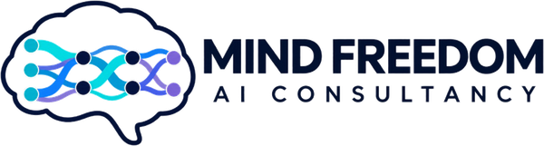

Engineering & GIS with AI
AI that works directly inside your design, analysis and mapping software.
- QGIS atlases and spatial analysis
- MIDAS Civil, STAAD.Pro and AutoCAD automation
- Design reports, drawings and BoQ support
We connect AI to engineering software, office workflows and research practice, then train your people to run it. Real projects, measured results, and no hype.
Every engagement starts from a real task you do each week. We pick the right AI tools, connect them to your files and software, and leave you with a working system and the skills to keep it running.
AI that works directly inside your design, analysis and mapping software.
Scheduled jobs that read your email, update your sheets and send the report.
Responsible AI for teaching, study and research, within your institution's rules.
Faster proposals, reports and schedules that still read like your firm wrote them.
Small, dependable tools built around a specific calculation or system.
Hands-on sessions so your team can use AI safely and well on its own.
We start small and prove the value on your own data before anything grows. You keep every file, script and workflow we build.
A free call to map where time goes and which tasks AI can safely take on.
30–60 minWe automate one real task end to end and measure the time saved.
1–2 weeksWe connect it to your software, schedule it and document how it runs.
2–6 weeksYour team learns to run and extend it, with support when you need it.
OngoingTen recent projects across structures, GIS, planning and automation. Client and site names are withheld.
Four culvert encasement variants modelled and analysed in MIDAS Civil, with load cases, combinations and mesh checks set up through AI. The results became a reusable design workbook, Word design reports and AutoCAD drawings.
A QGIS atlas that shows what has been inspected and built on two road contracts, refreshed and exported to PDF every day at noon.
Two scheduled runs, one in the cloud and one on the office PC, read RFI emails, extract the details and keep the project sheets current.
From research on heritage, ground and traffic constraints to a live five-storey ArchiCAD model with a parametric parking object.
A realistic programme with overlapping trades, built and formatted inside MS Project, with A2 Gantt charts and a schedule report.
A competition entry linking planned coastal data centres to an island's freshwater and a marine conservation area, from approved data sources.
A multi-storey reinforced concrete building modelled, loaded and analysed in STAAD.Pro, with the drawing set finished and plotted in AutoCAD.
An Excel VBA tool that runs HDPE and PVC culvert checks, sweeps cover depths, compares sizes and flags every pass or fail.
An n8n workflow that checks inspection requests and the forecast against the road specifications, then emails each site a morning advisory.
AI connected to the office PC's engineering programs, so analysis, scheduling and drafting can run inside them directly.
Drawings, reports and workbooks contain client information and are shared on request, with permission.
Founded by Innocent Pius Tesha, a civil, structural and GIS engineer, Mind Freedom uses AI on live projects and measures what it saves. AI does the repetitive work; your people keep the judgement.

We reply within one working day with a short plan and whether AI is the right fit. The first consultation is free.